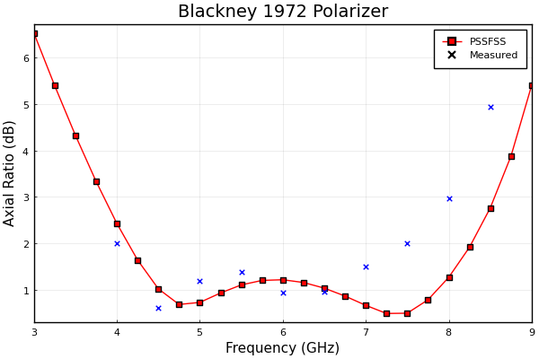
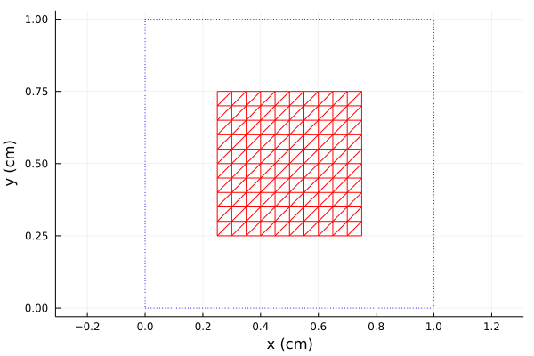
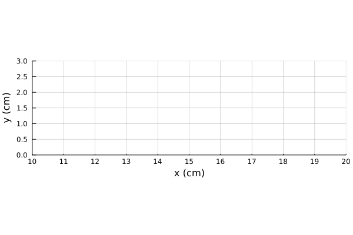
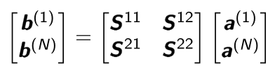

PSSFSS User Manual
Introduction
What Does PSSFSS Do?
PSSFSS analyzes a multilayered structure as shown below that is stratified in the $z$ direction and infinite in extent in the $x$ and $y$ directions:

There are $N \ge 2$ dielectric layers. The $k$th layer is characterized by its complex permittivity $\epsilon_k$, complex permeability $\mu_k$, and width $h_k$ (except for outer layers $1$ and $N$ which are assumed to be semi-infinite). There are $N-1$ junction planes separating the layers. At some of these junction planes there may exist frequency selective surfaces (FSSs) or polarization selective surfaces (PSSs) consisting of zero-thickness periodic patterns of metalization. PSSFSS will determine the generalized scattering matrix (GSM) for this structure which fully characterizes it in terms of illumination by an incoming plane wave of arbitrary polarization incident from either Region $1$ or Region $N$.
A Quick Example
Here is an example run of PSSFSS for a 4-sheet meanderline polarizer design from one of the first papers on the subject: T. L. Blackney, J. R. Burnett, and S. B. Cohn, “A design method for meander-line circular polarizers” presented at 22nd Annual Antenna Symposium, Oct. 1972. Detailed explanations of the code are omitted for now.
using PSSFSS
outersheet = meander(a=0.3535, b=0.707, h=0.28, w1=0.018,
w2=0.018, ntri=800, units=inch,rot=45)
innersheet = meander(a=0.3535, b=0.707, h=0.37, w1=0.027,
w2=0.027, ntri=800, units=inch,rot=45)
flist = 3:0.25:9
steering = (ϕ=0, θ=0)
substrate = Layer(ϵᵣ=2.52, width=0.01inch)
spacer(width) = Layer(width=width, ϵᵣ=1.08)
strata = [ Layer(),
outersheet, substrate, spacer(0.2inch),
innersheet, substrate, spacer(0.3inch),
innersheet, substrate, spacer(0.2inch),
outersheet, substrate,
Layer() ]
outputs = ["blackney.csv" @outputs FGHz ar21db(h)]
results = analyze(strata, flist, steering, outlist=outputs)Assuming that the above code is contained in the file "blackney.jl" it can be run from the Julia prompt via include("blackney.jl"), after which a CSV file "blackney.csv" is created, containing the frequency in GHz in the first column and axial ratio in dB in the second. It can be plotted in Julia as follows:
using Plots, DelimitedFiles
p = plot(title="Blackney 1972 Polarizer", xlabel="Frequency (GHz)",
ylabel="Axial Ratio (dB)")
data = readdlm("blackney.csv", ',', skipstart=1)
plot!(p, data[:,1],data[:,2],shape=:square,color=:red,label="PSSFSS")
dat = readdlm("blackney_ar_digitized.csv", ',')
scatter!(p, dat[:,1],dat[:,2],color=:blue,shape=:x,label="Measured")
display(p)Note that we also graphed the measured results digitized from the plot presented in the paper. Here is the comparison plot:

The PSSFSS run took about 30 seconds on my machine for 4 meanderline PSS sheets analyzed at 25 frequencies.
I hope this example whetted your appetite to learn more about PSSFSS!
Recommendations for Hardware and Software
PSSFSS is written in the Julia programming language. You must have Julia installed to use PSSFSS. For Windows users, I recommend using the Chocolatey package manager to handle the Julia installation. For Linux and Mac users, I recommend using JILL.py to manage the installation.
It goes without saying that computational electromagnetics is compute intensive. You will want to run PSSFSS on a rather "beefy" machine. A machine with multiple cores will provide the best experience since the code is multi-threaded. Also, PSSFSS can use a lot of RAM–a minimum of 16 GBytes RAM is recommended. The examples provided in this documentation were run on either a Windows or Linux machine, both equipped with an 8-core Intel(R) Core(TM) i7-9700 processor clocked at 3 GHz, with either 32 GBytes (Windows) or 64 GBytes (Linux) RAM, with multi-threading enabled via the -t auto Julia startup option. Multi-threading must be explicitly enabled in Julia. Please see this section of the Julia documentation for details.
You will need a text editor to create Julia scripts that run PSSFSS. One of the best for this purpose is VS Code, which has extensive support for both editing and running Julia via the julia-vscode extension. Again, Windows users can conveniently install VS Code using Chocolatey. Whatever your choice of editor, installation and use of the JuliaMono fonts is highly recommended. JuliaMono exploits Julia's support for Unicode fonts and allows one to use standard engineering symbols for electromagnetic quantities directly in Julia scripts; symbols such as ϵᵣ, μᵣ, θ, ϕ, and tanδ.
An alternative to using a text editor is to run scripts from a Jupyter notebook. See the IJulia package for further details.
It is strongly suggested that PSSFSS users also install the Plots package. This will allow easy visualization of the FSS/PSS element triangulations produced by PSSFSS, in addition to providing a convenient means to plot analysis results.
The PSSFSS Analysis Process
Here are the steps in the analysis process.
Strata: Specify the type and geometry of the FSS/PSS sheet(s) and intervening dielectric layers.
Steering: Specify the desired values of the unit cell incremental phasing or of the set of incidence angles to be considered.
Specify the frequencies at which the structure is to be analyzed.
Specify any outputs to be written to one or more CSV files.
Invoke the
analysisfunction to perform the desired analysis. This will generate a log file, a "results" file, and the output files specified in Step 4.Optionally, extract additional outputs from the results returned by
analyzevia a call toextract_result, or from the results file via a call toextract_result_file.Plot or export extracted outputs.
We dissect these steps below...
Strata
Layer
Dielectric layers are created with the Layer function:
julia> using PSSFSS # Brings PSSFSS functions and types into scope
julia> Layer() # Defaults to zero-thickness vacuum layer
Layer: width=0 mm, ϵᵣ=1.0, tanδ=0.0, μᵣ=1.0, mtanδ=0.0, 0 modesjulia> Layer(ϵᵣ=2.2, tanδ=0.003, width=20mil) # Available length units include mil, inch, mm, cm
Layer: width=20 mil, ϵᵣ=2.2, tanδ=0.003, μᵣ=1.0, mtanδ=0.0, 0 modesLayers and sheets can be assigned to Julia variables to avoid repetitive typing:
julia> duroid = Layer(ϵᵣ=2.2, tanδ=0.003, width=20mil)
Layer: width=20 mil, ϵᵣ=2.2, tanδ=0.003, μᵣ=1.0, mtanδ=0.0, 0 modes
julia> foam = Layer(epsr=1.05, width=0.25inch, tandel=0.001) # You can stick to ASCII if you prefer
Layer: width=0.25 inch, ϵᵣ=1.05, tanδ=0.001, μᵣ=1.0, mtanδ=0.0, 0 modesRWGSheet
An RWGSheet object represents the triangulation of an FSS/PSS element, and is created by calling a constructor function for a particular style of sheet:
julia> patch = rectstrip(Nx=10, Ny=10, Px=1, Py=1, Lx=0.5, Ly=0.5, units=cm)
RWGSheet: style=rectstrip, class=J, 121 nodes, 320 edges, 200 facesThe call to rectstrip above creates a RWGSheet object for a rectangular strip of dimensions 0.5 cm in the x and y directions, lying in a square unit cell of dimension 1 cm. The triangulation uses 10 edges in the x and y directions (Nx and Ny).
You can get documentation for rectstrip by typing ?rectstrip at the Julia prompt. rectstrip can be used to model dipoles, strip grids, ground planes, rectangular reflectarray elements, and rectangular patch elements. A call to rectstrip generates a rectangular strip, which by default (i.e. when rot=0) is oriented with its sides parallel to the x and y axes. It should be noted that it is permissible for either or both strip side lengths to be equal to the corresponding unit cell dimension (i.e. Lx==Px and/or Ly==Py). Currently, this is the only way to model an imperfectly conducting ground plane (Rsheet > 0) that completely fills the unit cell.
Other FSS/PSS element types: pecsheet, pmcsheet, polyring, meander, loadedcross, jerusalemcross.
RWGSheet Classes
The default class for a RWGSheet is 'J' meaning the triangulation represents electric surface currents flowing on a metalized region. Alternatively, one can specify class='M' in the call to create the RWGSheet object, in which case the triangulation represents equivalent magnetic current in an aperture in an otherwise solid metallic surface. So 'J'-class is used for metal wire, strip, patch, capacitive, etc. elements, while 'M'-class is used for slot, aperture, inductive, etc. elements.
Plotting Sheets
We can visualize the triangulation using the plot function of the Plots package.
julia> using Plots
julia> plot(patch)
Plot{Plots.GRBackend() n=1}
julia> plot(patch, linecolor=:red, unitcell=true)
Plot{Plots.GRBackend() n=2}
Here we changed the color and turned on the unit cell outline. Other optional keywords that PSSFSS adds to or uses from the plot function:
plot Keywords Used by PSSFSS (defaults in bold)
| Keyword | Value(s) | Description |
|---|---|---|
edges | true/false | Plot triangle edges? |
faces | false/true | Plot triangle faces? |
nodes | false/true | Plot triangle vertices? |
unitcell | false/true | Plot unit cell? |
linecolor | :black/Any Plots color | Color for triangle edges |
fillcolor | :blue/Any Plots color | Color for triangle faces |
fillalpha | 0.8/0≤t≤1 | Opacity for triangle faces |
markercolor | :black/Any Plots color | Color for triangle vertices |
markersize | 1/n | Size of triangle vertices |
markershape | :circle/Any Plots marker shape | Shape of triangle vertices |
rep | (1,1)/(n₁,n₂) | # of repetitions of unit cell to draw along the two periodic directions |
julia> plot(patch, rep=(4,3)) # Show multiple FSS elements
Plot{Plots.GRBackend() n=12}
Strata: The full structure geometry
julia> strata = [Layer(), patch, Layer()] # A vector of RWGSheet and Layer objects
3-element Vector{Any}:
Layer: width=0 mm, ϵᵣ=1.0, tanδ=0.0, μᵣ=1.0, mtanδ=0.0, 0 modes
RWGSheet: style=rectstrip, class=J, 121 nodes, 320 edges, 200 faces
Layer: width=0 mm, ϵᵣ=1.0, tanδ=0.0, μᵣ=1.0, mtanδ=0.0, 0 modesThe first and last entries must be lossless Layers with identical electrical parameters. They are assumed to be semi-infinite in extent. In between these outer layers can be any number of other layers and FSS sheets. Any two sheets cannot be adjacent: they must be separated by at least one Layer.
Steering
You can specify a set of plane wave incidence angles to be analyzed, or a set of progressive phase shifts.
Steering Choice: Specify Incidence angles
The steering angles $\theta^{\text{inc}}$ and $\phi^\text{inc}$ specify the the incident wavevector for the plane wave illuminating the structure:
\[ \vec{k}_1 = k_1(\hat{x} \sin\theta^\text{inc} \cos \phi^\text{inc} + \hat{y} \sin\theta^\text{inc} \sin \phi^\text{inc} + \hat{z} \cos\theta^\text{inc}) \quad \text{(Region} \, 1 \, \text{incidence)} \\ \vec{k}_N = k_N(\hat{x} \sin\theta^\text{inc} \cos \phi^\text{inc} + \hat{y} \sin\theta^\text{inc} \sin \phi^\text{inc} - \hat{z} \cos\theta^\text{inc}) \quad \text{(Region} \, N \, \text{incidence)}\]
Here $1$ refers to the first Layer specified in the strata vector, and $N$ refers to the last. Use a named tuple to specify the set of steering angles to be analyzed. Here are some examples:
julia> steer = (θ=0, ϕ=0) # The most common case. Note that "inc" is implied and not used.
(θ = 0, ϕ = 0)
julia> steer = (θ=0:15:45, ϕ=[0,90])
(θ = 0:15:45, ϕ = [0, 90])
julia> steer = (phi=[0,90], theta=[0,15,30,45]) # Can use ASCII names if desired
(phi = [0, 90], theta = [0, 15, 30, 45])The last two assignments above are equivalent as inputs to analyze, except for the order in which the angles will be processed. analyze will execute a triple loop consisting of the two incidence angles and frequency. Frequency is always the innermost loop so it will vary most rapidly. In the second line above, since θ was specified first, it will be iterated in the outermost loop and will thus vary the slowest. In the last example above, ϕ will be iterated in the outmost loop, then θ, then frequency.
Steering Choice: Specify Phasing
Plane wave illumination induces a progressive phase shift from cell to cell of the structure:
\[ V(\vec{r} + m\vec{s}_1 + n\vec{s}_2) = e^{-j(m\psi_1 + n\psi_2)} V(\vec{r})\]
for all integers $m$ and $n$, where $\vec{s}_1$ and $\vec{s}_2$ are the lattice vectors of the 2D periodic structure, and $\psi_1$ and $\psi_2$ are the incremental phase shifts (a pair of real numbers). Specify the phasings in degrees as a named tuple as in either of the following two examples:
julia> steer = (ψ₁=10:10:40, ψ₂=0:5:15)
(ψ₁ = 10:10:40, ψ₂ = 0:5:15)
julia> steer = (psi1=10:10:40, psi2=0) # Can use ASCII names if desired
(psi1 = 10:10:40, psi2 = 0)The rules for order of execution are the same as for steering angles: The first named quantity is incremented in the outer loop.
Steering: Which Choice?
Because of the unique wide-band Green's function formulation used by PSSFSS, it is significantly (several times) faster to perform a frequency sweep if the incremental phase shifts are held constant with frequency, rather than the incidence angles. The only exception is normal incidence, i.e. θ = 0, which implies that $\psi_1 = \psi_2 = 0$ for all frequencies. Note however, that by sweeping frequency over a number of different phasings, one can "cover" any desired range of scan angles.
Analysis Frequencies
Frequencies to be analyzed are entered in GHz as either a scalar value or a Julia "iterable collection" such as an Array or Range:
julia> flist = 12
12
julia> flist = 2:2:12 # same as [2,4,6,8,10,12]
2:2:12
julia> flist = union(7:0.5:10, 20:0.5:25) # Two frequency bands
18-element Vector{Float64}:
7.0
7.5
8.0
8.5
9.0
9.5
10.0
20.0
20.5
21.0
21.5
22.0
22.5
23.0
23.5
24.0
24.5
25.0Outputs
Standard Output Files
By default PSSFSS will create a log file named "pssfss.log" and a results file named "pssfss.res". The former is a text file and the latter is a binary (JLD2) file. The log file contains a recapitulation of the geometry being analyzed and a report on the progress and timing of the analysis. The results file contains the generalized scattering matrices computed by PSSFSS along with other information needed to generate any of the output parameters to be described shortly. The names used for these two files can be specified using the logfile and resultfile keyword arguments to analyze. If you wish to bypass creation of either of these files (not recommended), use, e.g. resultfile=devnull in the call to analyze.
Requesting Additional Outputs
Before describing the syntax used to request additional outputs, we digress briefly to establish notation...
Scattering Parameters Computed by PSSFSS
The scattering matrix computed by PSSFSS relates the incoming and outgoing TE and TM travelling wave coefficients for Layers $1$ and $N$ of the stratified structure:
 |  |
where
 |
So we see that the individual partitions of the scattering matrix are each a $2 \times 2$ matrix, with $\boldsymbol{S}^{11}$ and $\boldsymbol{S}^{22}$ containing reflection coefficients and $\boldsymbol{S}^{12}$ and $\boldsymbol{S}^{21}$ containing transmission coefficients.
The @outputs macro
The @outputs macro is used to request output performance parameters. It can be used in three different ways:
- It can be used as part of the
outlistkeyword argument toanalyzeto set up the outputs to be written to one or more CSV files during the analysis run. - It can be used as part of an input argument to
extract_result_fileto extract performance parameters from the results file generated by a previous analysis run. - It can be used as part of an input argument to
extract_resultto extract performance parameters from the Julia variable returned by theanalysisfunction.
We'll see how to accomplish all these in a bit, but first let's look at the syntax and semantics of using @outputs. As a first example, we can request the $(1,2)$ entry of $\boldsymbol{S}^{21}$ via the following code:
@outputs s21(1,2)Recall that this is the transmission coefficient for the amount of outgoing TE plane wave in Layer $N$ due to illuminating Layer $1$ with an incoming TM plane wave.
It isn't convenient to remember that (1,2) means (TE,TM), so PSSFSS lets you use a friendlier notation:
@outputs S21(te,tm) # Note that case is not significantThe above code fragment is exactly equivalent to the former one. Case (capitalization) is not significant for the arguments of the @outputs macro, so s21(TE,tm), S21(TE,TM), etc. are all equivalent.
The previous constructions will fetch the coefficient as a complex number. Most of the time this is not desired. To obtain the magnitude in dB, use e.g. S21dB(te,tm) and to obtain the phase angle in degrees use e.g. S21ang(te,tm). Again, case is not significant, and "1" and "te" can be freely interchanged, as can "2" and "tm".
It is often desired to use a set of polarization basis vectors other than TE/TM to define field coefficients. PSSFSS supports in addition to TE/TM the use of H/V for horizontal/vertical components (in the Ludwig 3 sense), and L/R for left-hand circular and right-hand circular polarization (in the IEEE sense).
Examples
Here is an example for multiple outputs: frequency in GHz, crosspol reflection coefficient in Layer 1, axial ratio (in dB) for the outgoing wave in Layer 1 due to incoming horizontally polarized wave in Layer $N$:
@outputs FGHz s11dB(h,v) ar12dB(h)Note that multiple arguments to @outputs are separated by spaces, with no commas or other punctuation between[1].
Another example for multiple outputs: frequency in GHz, incidence angles $\theta$ and $\phi$, transmission coefficient magnitudes in dB to LHCP and RHCP for a vertically polarized incident wave:
@outputs FGHz θ ϕ s21dB(L,v) s21dB(R,V)
@outputs FGHz theta phi s21dB(L,v) s21dB(R,V)The above two macro invocations produce identical results, showing that you can use ASCII names for the incidence angles if desired.
Table of Valid @outputs Parameters
All parameters taking arguments can use any of 1, 2, TE, TM, H, V, L, and R. The parameters and their argument(s) can be typed without regard to capitalization.
| Name(s) | # of Arguments | Description |
|---|---|---|
| FGHz, FMHz | 0 | Frequency in GHz or MHz, resp. |
| θ, theta, ϕ, phi | 0 | Incidence angles in degrees |
| ψ₁, ψ₂, psi1, psi2 | 0 | Incremental phase shifts in degrees |
| s11, s12, s21, s22 | 2 | Complex coefficient |
| s11mag, s12mag, s21mag, s22mag | 2 | Magnitude of coefficient |
| s11db, s12db, s21db, s22db | 2 | Magnitude in dB of coefficient |
| s11ang, s12ang, s21ang, s22ang | 2 | Phase angle in deg. of coefficient |
| S11real, s12real, s21real, s22real | 2 | Real part of coefficient |
| S11imag, s12imag, s21imag, s22imag | 2 | Imaginary part of coefficient |
| ar11db, ar12db, ar21db, ar22db | 1 | Axial ratio in dB |
| Δipd12, dipd12, Δipd21, dipd21 | 0 | Delta insertion phase delay in deg. (TE-TM) |
| Δil12, dil12, Δil21, dil21 | 0 | Delta insertion loss in dB (TE-TM) |
The outlist Keyword Argument to analyze
outlist is used to specify data to be written to CSV files during the PSSFSS analysis, in the form of a matrix with one or more rows. Each row starts with a string containing the name of a CSV file; the rest of the row is an invocation of @outputs (or the result of such an invocation assigned to a Julia variable). Here is an example that will create a pair of CSV files, one containing transmission coefficient magnitudes and the other containing reflection coefficient magnitudes (both in dB). Frequency is also included in the CSV file to facilitate easy plotting:
...
csvout = ["transmitted.csv" @outputs FGHz s21dB(h,h) s21db(v,v)
"reflected.csv" @outputs FGHz s11dB(h,h) s11dB(v,v) ]
...
analyze(strata, flist, (θ=0, ϕ=0), outlist=csvout)The matrix is delineated using square brackets. Note that there can be no commas between entries in a row. If more than a single incidence angle had been specified then we would also have wanted to include incidence angles in the CSV files.
Using the Result File
The result file generated by analyze can be used to obtain any quantity available to the @outputs macro. Consider the Blackney meanderline polarizer example presented earlier. For that run, the result file name was left at its default value "pssfss.res". We can use the extract_result_file function to extract results from it as follows:
julia> dat = extract_result_file("pssfss.res", @outputs FGHz ar21db(h))
25×2 Matrix{Float64}:
3.0 6.52976
3.25 5.39855
3.5 4.32914
3.75 3.3334
4.0 2.42903
4.25 1.64223
⋮
8.25 1.91583
8.5 2.76022
8.75 3.87568
9.0 5.40385As illustrated above, the value returned by extract_result_file is a two-dimensional array (a Matrix), with each column corresponding to a parameter of the @outputs macro.
Using the analyze Function Return Value
The variable returned from analyze can be used in a similar way to the result file to obtain any quantity available to the @outputs macro, but for this purpose we use the extract_result function:
julia> results = analyze(strata, flist, steering, outlist=outputs);
julia> dat = extract_result(results, @outputs FGHz ar21db(h))
25×2 Matrix{Float64}:
3.0 6.52976
3.25 5.39855
3.5 4.32914
3.75 3.3334
4.0 2.42903
4.25 1.64223
⋮
8.25 1.91583
8.5 2.76022
8.75 3.87568
9.0 5.40385As illustrated above, the value returned by extract_result is a two-dimensional array (a Matrix), with each column corresponding to a parameter of the @outputs macro.
- 1An alternative syntax is, e.g.
@outputs(FGHz, s11dB(h,v), ar12dB(h))with no spaces between the macro name and the opening parenthesis.